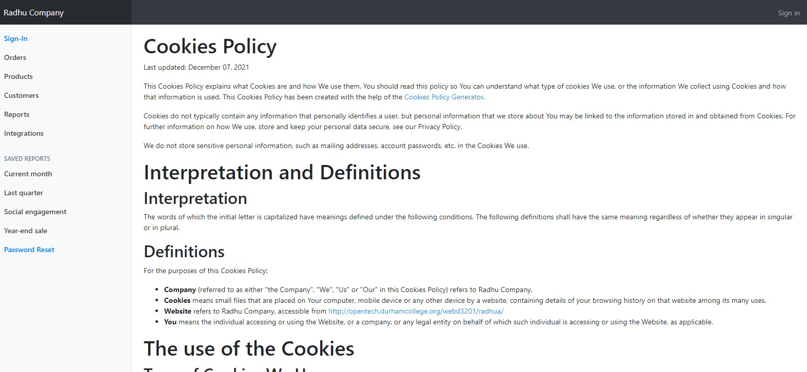
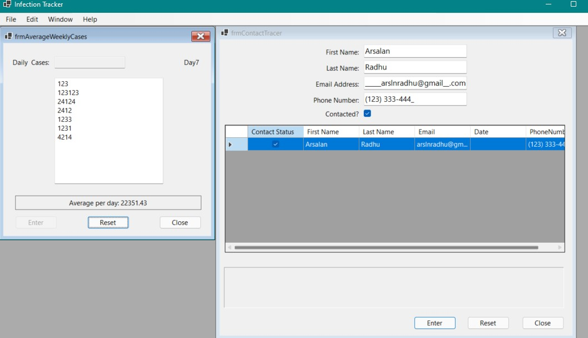
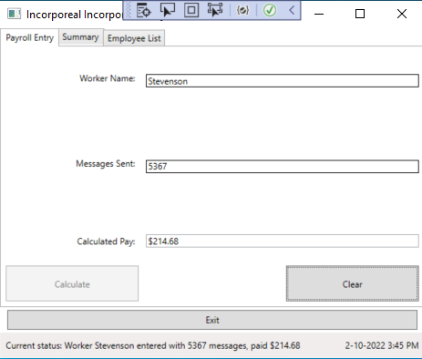
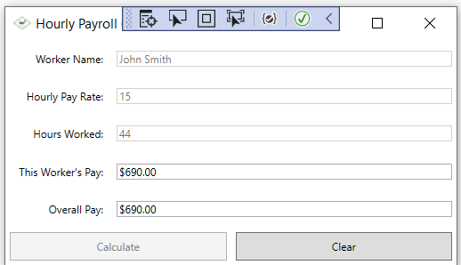

This project was done last semester for WEBD3201. We had to make a website
using a given template for our 'company'. The site a login functionality which
also logged the login attempts etc. It was able to register two different types of
users and was able to give access according to the user's authorization.

This project was the first major project that I had ever done in my life.
This was done for NETD2202 as a final project. It was a little challenging due
to some circumstances but I was able to make an acceptable program which I was happy with.

I loved to work on this Assignment project
because even If I was struggling through out the Project I was getting
so much help from my Prof every time I asked and we made this project
worked and I really enjoyed working with this project with the help of
my Prof.

In this specific Assignment as we started in the beginning of the term,
I was struggling to create the GUI and I looked up help through watching
Lectures Videos and I started working on it on my own and found it very
interesting going forward and it possible with the help of my Professor
as he was so helpful to me through out my whole semester. So, this
project was one of my favorite.